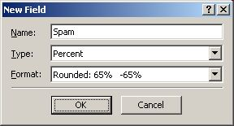

|
|
A spam filter based on statistical analysis of your personal mail.
If you are new to SpamBayes, see Welcome to SpamBayes.
If you want to add the Spam field to your Outlook views, follow these instructions.
If you need help configuring SpamBayes, see our Configuration Guide.
If you are having problems with SpamBayes, please see the Troubleshooting Guide.
This is free software. Please offer any help you are able to. In particular, contributions to this documentation are welcome! If you don't know where to start, please send a mail, indicating any skills you may have we could use.
When Outlook is under load, SpamBayes may occasionally miss some messages (as Outlook doesn't tell us they appeared), and if you use builtin Outlook rules, you may find that occasionally they also fail to filter messages (as both SpamBayes and Outlook "fight" over processing the message). To overcome these problems, SpamBayes defaults to filtering new messages in the background. The enabling or disabling of this feature, and the delay before processing new mails can be configured via the SpamBayes Manager's Advancedtab.
Many people report that occasionally the toolbars will stop working. See the troubleshooting guide for more details on how to fix this.
If you uninstall SpamBayes, the toolbar items will remain when you next start Outlook. You can delete the toolbar by right-clicking on it, then selecting Customize. Our troubleshooting guide has a lot more information on toolbars.
A custom property named spam is added to all Outlook messages scored, but Outlook does not allow us to automatically add this to your views. However, you can teach Outlook to display this field as a column in any table view, like the standard Messages view.
This takes some work, and has to be done again for every folder in which you want to display a Spam column - typically this will be all folders you are filtering, and your Spam and Unsure folders. Perform the following steps:
Outlook's standard Automatic Formatting features can also be taught how to access the value of this field; for example, you could tell Outlook to display rows with suspected spam messages in green italic. However, for whatever reason, the Outlook Rules Wizard does not allow creating rules based on user-defined fields. That's why this addin supplies its own filtering rules.
By default, SpamBayes will install itself only for the user who actually installed it. If other users log onto the same machine, their Outlook installation will not have SpamBayes available. Even though this is the way SpamBayes is designed, our troubleshooting guide has details on how you can change this.
For problems reported since this version of SpamBayes was released, see the online frequently reported bugs list.